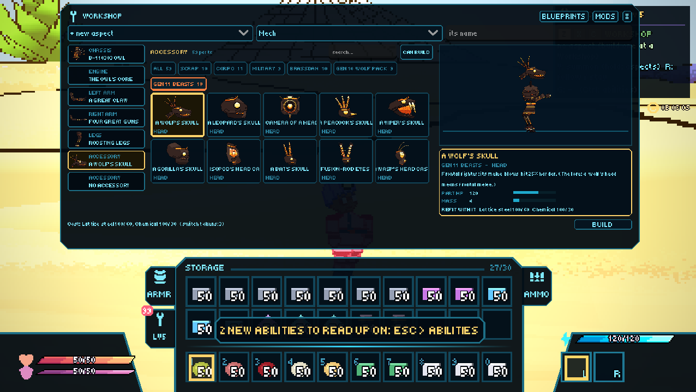
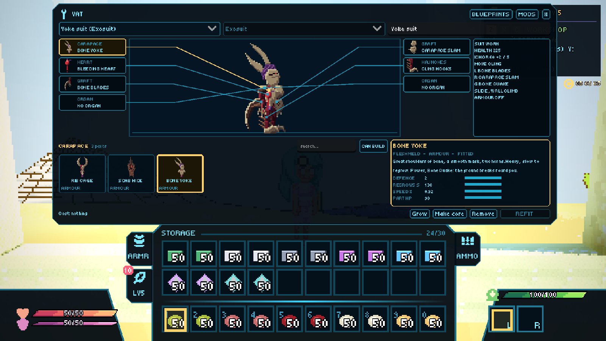

METAL AND FLESH
Robots and suits.
The Mechanist and the Biomancer each build an aspect. A Mechanist rides a mech; a Biomancer wears an exosuit. Both have been rebuilt over the last two weeks. They are playable now and in a much better place, and a bigger update to both is still to come.
METAL // mechs

Mechs got a real body: legs whose feet find the actual ground and step onto it, a gyro holding the cab level, and arms that aim at the cursor. They have weight, so landings thud and a dash carries momentum. They break part by part, so an arm or the legs can go before the whole machine does. The Workshop sorts hundreds of parts into lines and types, so you build by picture.
Beyond the rebels' scrap there are the city's lines, Corpo, Military and Brassdan, and the Lattice: whole named frames, a parts line, and the Beasts. Party members can pilot a mech you hand them as a Mech Fob, and NPCs call mechs in a fight.
FLESH // exosuits

An exosuit is worn, not ridden. It grows onto you from a pool at your feet, and your hands keep their own weapons. It runs on its own pool, ichor. Grafts are extra attacks on the wheel, or your fists when your hand is empty. Hits land on the suit before they reach you. Wearing one feels like power armour: you're faster, jump higher, slide, and climb walls.
There are four lines. Fleshmeld is cheap, raw flesh. Wooded is a walking grove. Silk spins its strands into traps and roads. Celicra is holy and spiritual. Above them sit the Armaments of War, twelve whole premade suits from flame and frost to life, death, time, the void and everything. A suit can be copied into a Core and handed to a party member to wear.